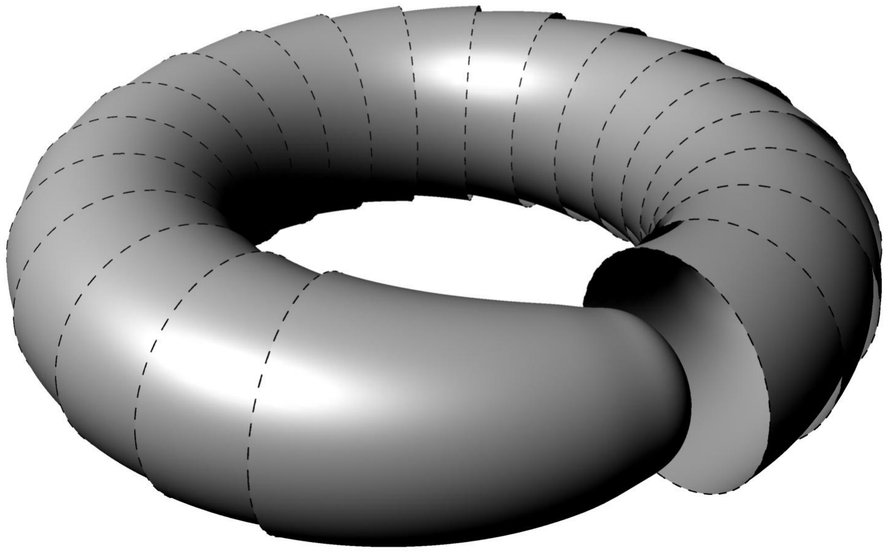
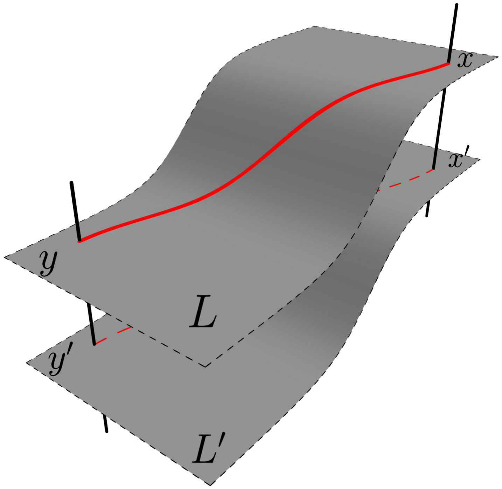

A characteristic map for the holonomy groupoid of a foliation
2022 · Mathematische Zeitschrift 300(2), 1093–1115
Characteristic classes at the level of the full holonomy groupoid, retaining leafwise geometry.
A foliation of a manifold is a decomposition of the manifold into immersed submanifolds called leaves, which fit together in a nice tangential fashion; see the illustration for a classical example, the Reeb foliation of the solid torus.
Foliated manifolds are the geometric incarnation of the solutions to first order linear systems of partial differential equations, and as such are important in both pure mathematics and its applications. They admit both interesting dynamics (holonomy) and interesting topology (characteristic classes) with which my pure mathematical research has been concerned.

A transversal through a foliated manifold is a submanifold that cuts across leaves. Given a path in a leaf, a transversal through the starting point may be mapped to a transversal through the end point by following neighbouring paths in neighbouring leaves (see the figure to the right). If the path is a loop, so the start and end point coincide, then the induced map sends transversals to themselves. In particular, a sufficiently small loop always induces the identity map; on the other hand, if the foliation is sufficiently nontrivial, certain loops induce non-trivial maps on transversals corresponding to leaves wrapping around themselves. This phenomenon is called holonomy, and the holonomy of all leafwise paths can be organised into a single algebraic object called a holonomy groupoid.

This notion of foliation holonomy is, a-priori, different from the notion of holonomy more commonly encountered in gauge theory, wherein it is a manifestation of the curvature of a connection in a principal fibre bundle. My work on foliated bundles gives a construction of foliation holonomy which realises it precisely in this gauge-theoretic form, namely as the holonomy of a leafwise flat connection in an infinite-dimensional bundle of germs of local conservation laws; by this technique I was also able to produce novel holonomy groupoids for foliated bundles. My subsequent work extended this construction to singular foliations.
Foliations support topological invariants called characteristic classes. A particularly important example is the Godbillon-Vey class, whose non-triviality indicates dynamical properties such as chaos in the space of leaves. Such classes can be realised as arising from the classifying space of the holonomy groupoid of the foliation.
Groupoid constructions of characteristic classes historically pass through reduction of the groupoid by a choice of complete transversal to a Morita-equivalent étale groupoid. The cohomological information is preserved, but its relation to the global leafwise geometry becomes harder to see. My paper on the full holonomy groupoid gives a Chern–Weil construction directly in terms of that geometry.
More recently, in work with Benjamin McMillan, we extend this geometric construction to singular foliations whose singularities are sufficiently mild that they can still be represented by maps into Haefliger's classifying space. Our theory gives a complete Chern-Weil construction of the usual foliation characteristic classes for such foliations by using geometry that is appropriately adapted to singularities.
The space of leaves of a foliation is often too singular to study as an ordinary manifold. In Connes' approach to noncommutative geometry, one instead studies the convolution algebra of the holonomy groupoid. Its operator-algebraic invariants give access to the geometry and topology of the foliation.
Holonomy groupoids need not be Hausdorff. Foliations therefore motivate the development of equivariant \(KK\)-theory for non-Hausdorff groupoids, which is the subject of my survey of this theory. The paper gives a unified account of its constructions and supplies detailed proofs of results that had previously only been stated or used in applications.
Among the constructions that can be realised at this level are the characteristic classes of foliations. In my paper with Adam Rennie, we in particular realise the Godbillon-Vey invariant as a semifinite spectral triple constructed from an equivariant \(KK\)-class, whose Chern character recovers the Connes-Moscovici cyclic cocycle representative of the Godbillon-Vey invariant.
Among my favourite ideas in mathematics are those relating singularities to topology, such as Bott's theorems on the zeros of vector fields. I am very intrigued by the possibility that sufficiently singular foliations might admit topological invariants that do not arise in the setting of regular foliations, and how such invariants might be constructed. One possibility I would like to investigate (time permitting!) is whether certain types of singularities admit their own local models, just like regular foliations are locally modelled by the Haefliger groupoid of germs of diffeomorphisms, and whether such local models admit their own interesting characteristic classes.
2022 · Mathematische Zeitschrift 300(2), 1093–1115
Characteristic classes at the level of the full holonomy groupoid, retaining leafwise geometry.
2026 · Differential Geometry and its Applications · to appear
2021 · Annals of Global Analysis and Geometry 60(3), 609–646
2021 · SIGMA 17, article 043
2020 · Annals of K-Theory 5(2), 249–294
2020 · Journal of Geometry and Physics 154, article 103709
2021 · Communications in Mathematical Physics 385(1), 331–368
2019 · Doctoral thesis · University of Wollongong